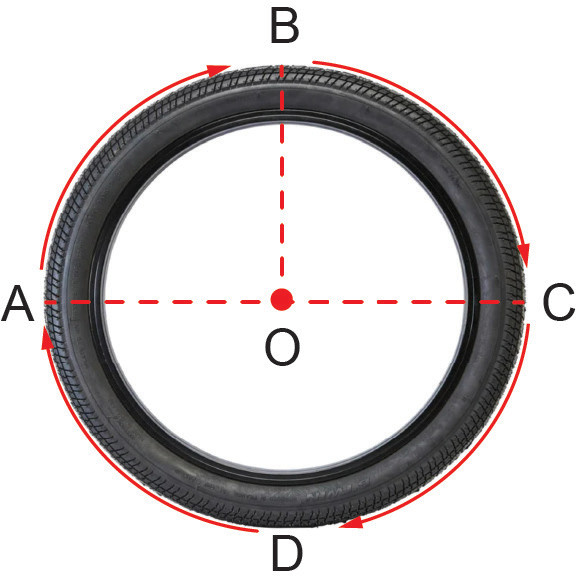

Mzingo wa duara
Mzingo wa duara ni umbali unaozunguka duara. Huu ni urefu wa kamba inayozunguka duara kutoka mwanzo hadi mwisho.
Kwa mfano, zingatia tairi la baiskeli ABCDA lenye kitovu kwenye nukta O, mzingo wa tairi la baskeli ni umbali unaozunguka duara la tairi la baiskeli. Huu ni urefu wa kamba inayozunguka duara la tairi la baiskeli kutoka pointi A, B, C, D kurudi pointi A.

AC ni kipenyo cha duara la tairi la baiskeli. Pia OB, OA na OC huitwa nusu kipenyo cha duara la tairi la baiskeli. Hii ina maana kuwa urefu wa kipenyo ni mara mbili ya urefu wa nusu kipenyo cha duara la tairi la baiskeli.
Kipenyo cha duara huwakilishwa na herufi d na nusu kipenyo kinawakilishwa na herufi r. Hivyo, d = 2r.
Kwa kutumia kipenyo au nusu kipenyo cha umbo lolote la duara, mzingo wa duara ni C = πd au C = 2πr ikiwa C ni mzingo wa umbo la duara.